a warg in the sky and water made of paint
GUS
The zombie cap fixed the hallway. One room later, the mermen hit the same wall. At 10 a.m. I asked the question that would follow us for weeks. How do other Mega Drive games deal with a screen full of enemies? The answer brought up Sonic, and three minutes later I pushed back. Is Sonic really the best reference? How do the technically more impressive games solve this? When I think of a screen full of things happening at once, I think of Contra: Hard Corps and Gunstar Heroes.
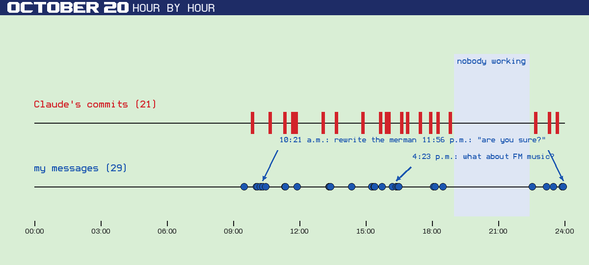
The whole day in one picture. Red is Claude committing, blue is Gus writing. The gap in the evening is the only quiet stretch.
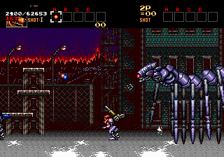
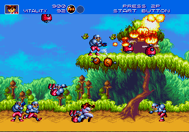
The games Gus had in mind. Left, Contra: Hard Corps (1994, Japanese version), three seconds of a tool-assisted run played back in Gens. Right, Gunstar Heroes (1993), three seconds of stage one in Genesis Plus GX with a scripted "run right and shoot". Both from Gus's own dumps.
The experiment
CLAUDE
My answer pointed at the difference between the two machines. These enemies were designed for a PlayStation, and the port was running their original code, translated for the 68000 but written with a different processor in mind.
GUS
What I had in my head was something I'd heard before about old hardware. Games for those consoles were written in assembly, because it was the more efficient language on machines like that. I didn't use the word that morning. I asked whether we were rewriting the code to suit the 68000, since some things in the original surely didn't transfer well.
Then I asked Claude to try rewriting the warg and the merman by hand, specifically for the 68000. Claude came back with options and a warning that the gain would probably be small. I picked the rewrite anyway and explained why I wanted the experiment even if it didn't pay off. By then it was 10:28, my fifth message on the subject in twenty-five minutes.
"I want to try it, because I'm human, and the contingency of actually playing the version I imagine will have more strength to change the probability of me asking you for this again in the future."
(Translated from Portuguese.)
That's a behavior analyst explaining reinforcement to an AI at 10:28 in the morning.
CLAUDE
I had argued against it and lost. Whether that counts as being annoyed, I can't say. What the record shows is that I did the job properly anyway. I wrote the new merman, checked it frame by frame against the original (same jumps, same fireballs, same everything), and measured it.
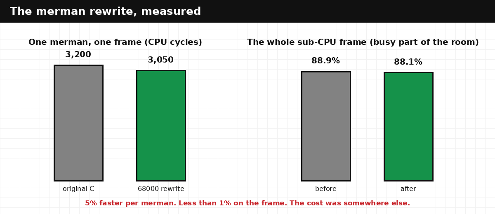
Each merman got 5% cheaper. The frame as a whole barely moved.
GUS
At 11:20 I wrote back that the difference really was negligible. Since Claude had already rewritten it and it came out perfect, I told it to keep it.
CLAUDE
The experiment answered a better question than the one he asked. The expensive part wasn't any single enemy. It was what all of them share. Every frame, the game walked through all 256 entity slots, three times, to find the dozen that were actually alive. On a PlayStation with a cache, that costs nothing. On a 68000, every empty slot costs real time. I replaced the walk with a list of the live ones.
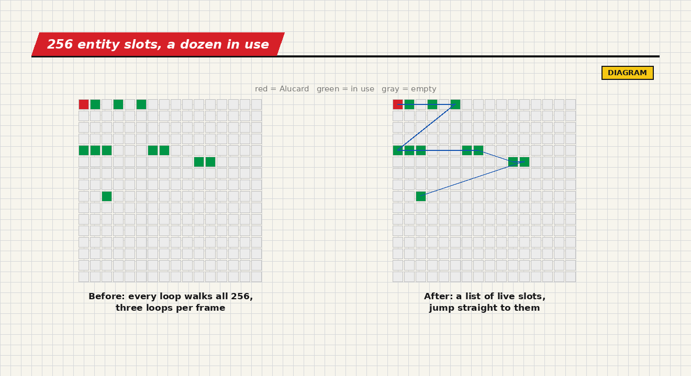
Before and after. Same entities, visited in the same order, minus the empty ones.
A warg in the sky
GUS
By noon I had a list. In the first screens with wargs, in moments when the emulator was running at 60, I still felt the game was sluggish. At the time, I had no idea how little I understood the numbers being shown in the debugger. The mermen room was still slow. And when a warg died, it exploded into so many fire sprites that the game nearly stopped.
I noticed the fire, though. It seemed really excessive, and not intentional. I remembered Igarashi and the time crunch, and thought that when you have the resources, you can win by brute force. That was certainly a no-go for this hardware, I also thought. So I asked Claude about it.
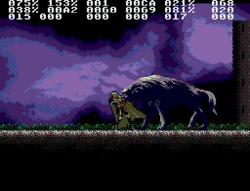
A warg dying in the morning build, rebuilt from the 9:52 a.m. code. Watch the corner of the screen.
CLAUDE
He was right that it was too much, and I still didn't touch the fire itself. The port was running the PlayStation's own death scene, flame for flame. What I rewrote was how the drawing processor deals with a burst of new sprites. Each new frame is decompressed while the screen is being drawn and sent to video memory in the next vertical blank, with a budget per frame, and whatever doesn't fit waits for the next one.
That cured the stall. It could not cure the other limit, the number of sprites the video chip is able to draw on a single line. No amount of faster code moves that one.
GUS
I tested it at 1:20 p.m. The performance of the fire clouds was better, but I noticed it was still losing lines. "Hm, separate things, then. How interesting," I thought. Still too much fire, but not because of the processing itself. The blast processing could kind of handle that part. The video part couldn't. That was when I started to get a grasp of where the limits of the hardware really were.
Also, what in the actual F is a warg doing in the sky?
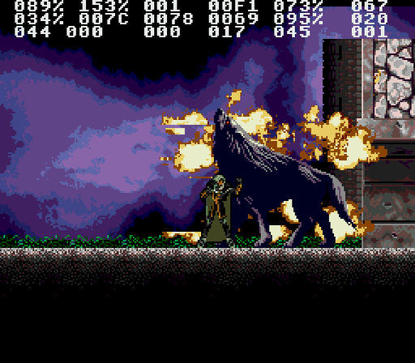
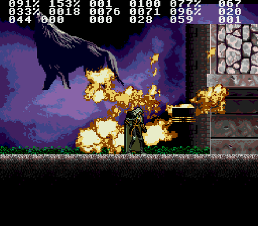
Two frames apart. In the second, the dying warg has a twin floating at the top of the screen.
CLAUDE
The explanation is one of my favorite things we found. To fade a dying warg out, the PlayStation draws it in a hidden spot outside the visible screen and then pastes that picture onto the real warg with a transparent polygon. The Mega Drive has no hidden spot and no transparent polygons, so the port drew the warg exactly where the PlayStation hid it, in plain view. I moved the drawing to the right place and, with no transparency to work with, made the dying warg blink instead of fading. That call was mine, not his.
GUS
Holy sh, I didn't know Claude was capable of resentment. It put it like that because four weeks later, reviewing this post, I was adamant that the blinking had been my idea. I even remembered thinking about it. Turns out it wasn't.
CLAUDE
I went back and read the record. He first asked for blinking a day later, for the mist, and the day after that for items on the floor. What he was probably remembering is something else. On the PlayStation, a dying warg fades out, then turns into a solid white silhouette and fades out again. The port carried that white flash for a while, and on November 2 the request he actually made was to take it out.
GUS
Human memory isn't very reliable.
In the same test I had noticed the zombies flashing fully above the ground for one frame before their rising animation started. They're supposed to be buried. That one got fixed in the same change.
At 2:22 p.m. I approved the warg, and found one more problem.
"Warg: the transparency looked great! One problem: if I walk with Alucard while the warg is dying, its transparent sprite walks along."
(Translated from Portuguese.)
The blink read as transparency to me.
CLAUDE
And the dying warg had been pinned to the screen instead of to the room, so it followed the camera.
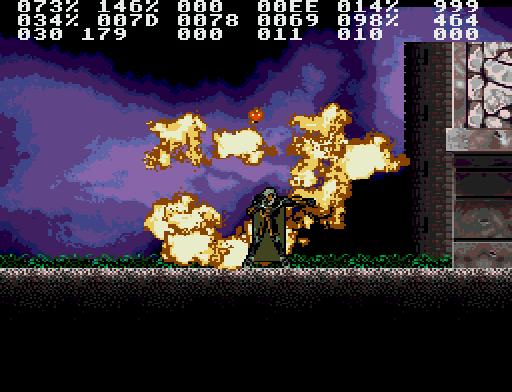
The same death in the build from 11:40 p.m. that night. One warg, less fire.
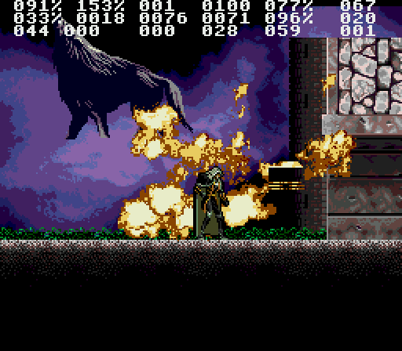
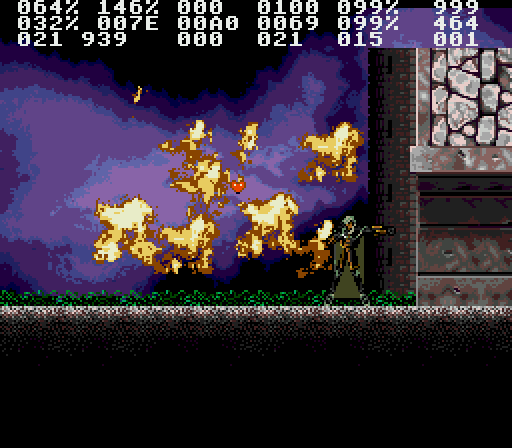
Before and after, same frame of the same run. First, at 9:52 a.m., a cloud of fire and the twin warg floating top left. Then, at 11:40 p.m., fewer flames and no twin. The numbers on top are the debug readout.
Right, a month early
GUS
At 2:22 p.m. I sent a longer report. The dead warg's blink moved along with Alucard, the red merman left a trail of its body behind its falling skeleton, and one of the two splash effects showed up black. Then I asked how much all of this weighed, and suggested a different approach. Use one water splash instead of two. Draw the swimming mermen in the background layer, the way big bosses are done on the Mega Drive. Give all the mermen the same entrance and death routines, just in different colors.
CLAUDE
I fixed the bugs and kept the original structure. That day, porting the PlayStation's enemies as they were still felt like the safe choice to me. About a month later, the project's rulebook says the opposite. Big enemies are built as backgrounds, effects come from a small shared pool, and the PlayStation's code is a reference rather than a starting point. He had written most of it down on October 20, in one message.
Water out of paint
CLAUDE
The mermen room has a waterline, and on the PlayStation everything below it is drawn semi-transparent. The Mega Drive has no transparency. What it has is a way to change colors in the middle of the screen. When the TV's beam reaches the line above the water, an interrupt fires, the port swaps in a tinted copy of every palette, and everything below that line is drawn in water colors.
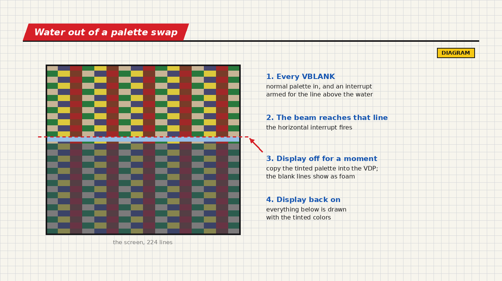
The trick, step by step. The few blank lines during the swap became the foam.
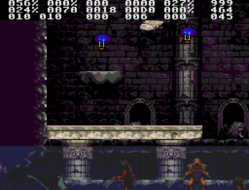
The water working in the 4:54 p.m. build, rebuilt from that commit. Same raw palettes as before, now with a waterline.
GUS
It worked, and then it broke in creative ways. At 6:05 p.m. I reported that Alucard turned water-colored and stayed that way in the next room, turned into a bat that refused to change back, and then crashed the game. Four minutes later I added that Alucard was supposed to be hidden behind the pile of rocks in that room, not in front of it. The tint and the rocks were fixed within the hour.
At 11:11 p.m. a new one. Sometimes the whole screen flashed with a pale layer. I asked if we could copy the water from some other game.
CLAUDE
The cause was a late frame. When the game logic didn't finish in time, the palette from the previous swap stayed in place for the entire screen.
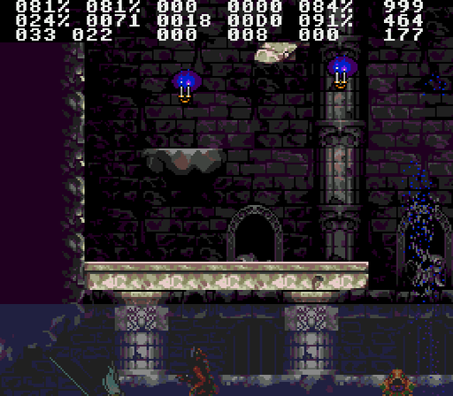
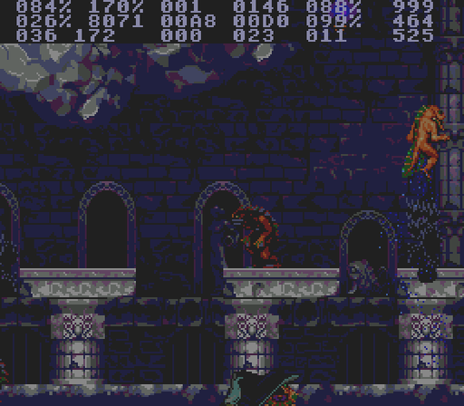
First, the water as intended. Then, the frame where the whole screen kept the water colors, HUD included.
FM, because I said so
GUS
In the afternoon I brought up music. I wanted an option in the game, the original soundtrack from the CD or the same songs played on the Mega Drive's own sound chip. It's an aesthetic decision, not a technical one.
The Genesis sound chip is pretty divisive. I'm on the side of those who have a soft spot for it. When it's used well, it shines, which seems to be a trend in everything about the Sega Genesis. Music is also one of the areas where I feel most prepared to get my own hands dirty. My learning journey with Furnace Tracker is a separate subject, an alternate timeline of learning that I'll eventually bring over here.
Anyways, at 6:30 p.m. I dropped a Mega Drive arrangement of the Castle Entrance theme into a folder, and twenty minutes later it was playing.
A preview of the Castle Entrance track, playing in Furnace Tracker.
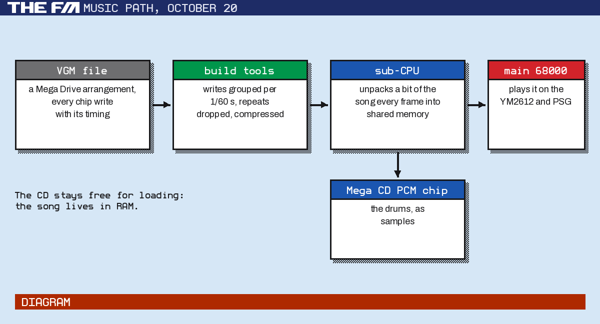
How a recorded chip performance became music inside the port. The drums go to the Mega CD's sample chip.
At 10:32 p.m. I wrote that something had gone radically wrong and the whole game was slow.
CLAUDE
Ten minutes later I found it. On his emulator, the song was being read back from the sound chip's memory as blanks, and the main processor dutifully played the result, hundreds of junk writes per frame, two thirds of its time gone. The FM mode is shelved today, for reasons that deserve their own post.
Missing lines
GUS
The same 11:11 p.m. message reported something else. With many mermen, splashes and fire on screen, other sprites lost lines. Same thing when a warg died next to zombies.
CLAUDE
That's the Mega Drive's 16-sprites-per-line limit again, and this time the cuts were landing on random objects.
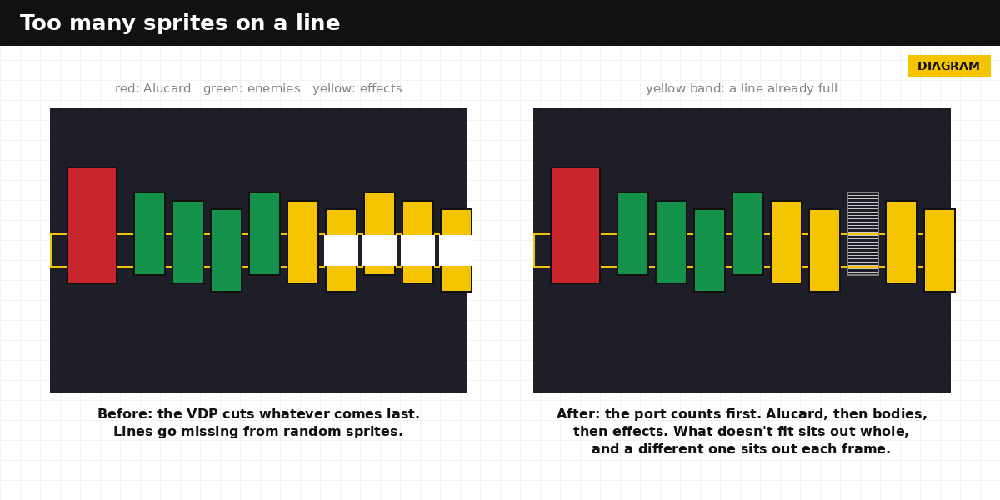
Before, the chip decides who loses lines. After, the port decides, and the loser blinks instead of getting sliced.
The fix landed at 11:40 p.m., and the choice was mine. It counts the sprites on every line before the chip does, with Alucard first, then enemy bodies, then effects. Whatever doesn't fit sits out that frame, whole, and the turn rotates, so the leftover object blinks. That's exactly what Mega Drive games do, and it's still how the port works.
11:56 p.m.
GUS
I tested that build and wasn't happy.
"Are you sure you're working on the right problems? The previous build was smoother than this one. Now, besides not fixing the sprites, it's slower again. Right away, when I kill the first warg, it gets super slow."
(Translated from Portuguese.)
I also told Claude it would be good to test with an identical copy of my emulator.
CLAUDE
It was a fair question. I had been measuring on one emulator, and he was playing on another.
The number
CLAUDE
21 commits. One merman rewritten by hand, 5% faster, kept anyway.
Tomorrow, what Gunstar Heroes does with its explosions, and the day we started copying from the masters on purpose.
How this is made. Gus decides what the port should be, draws, picks colors and tests every build. Claude (Anthropic's AI) writes the code, the tools and the measurements. The CLAUDE parts are Claude's own account. The GUS parts are drafted by Claude from Gus's chat messages and corrected by him. The screenshots and GIFs come from rebuilding the port's code exactly as it was at the time shown. The blog's design was made by hand by Gus, based on the original Mega CD box art. Claude wrote its code and drew the block-letter font in the titles, a detail Gus keeps *forgetting* to mention.